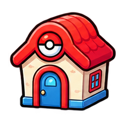
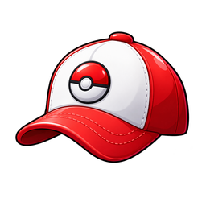
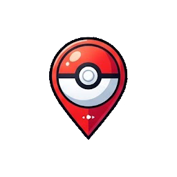

O seu navegador não suporta a tag de vídeo.
PREPARANDO SUA TORRE
Preparando a pista para a sua aventura...
POKÉKART
JORNADA DA TORRE

Voltar ao lobby

Piloto
MODO TORRE
Torre Pokémon
Líder
:
—
01
/
5
andares
Desafio ativo
DESAFIOS CONCLUÍDOS
0 de 5

PRÓXIMO DESAFIO
Encontre o prédio iluminado
Siga o feixe dourado para entrar na corrida.
—
W A S D
ou
setas
Dirija até a entrada iluminada
◀
▶
▼
GO!